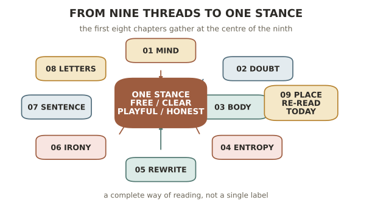

九 · 王小波的位置
走完八章，该退后一步，把散开的线索收拢，看这个人整个地站在哪里。这一章做两件事：一是把他放回当代文学的坐标里，看清他是怎样一个异数；二是回到导论开头那个"熟悉的遮蔽"，谈谈今天该怎么读他，以及他到底留给我们什么。既是全课的结语，也是对"重读"这件事本身的一点交代。
一、他不属于任何一格
要看清一个作家，常常要看他不是什么。王小波与他同时代的人放在一起，几乎处处不合。
他和先锋派（余华、格非、苏童那一批）差不多同时出现，也一样讲究叙事的实验。但先锋派的形式探索多半朝向语言的暴力、历史的残酷、命运的荒凉；王小波的实验（第五章那种不断重写）却是明亮的、好笑的、带着智力游戏的快感。他缺少先锋派那种阴郁的重量，也不要那种重量。
他写过知青岁月，却绝不是知青文学。伤痕文学把那段经历写成苦难、控诉与悲情；王小波偏偏用反讽、狂欢、甚至情欲去写它（第三章），拒绝一切苦大仇深的姿态。他不肯当受难者，他要当那个在苦难里依然鲜活、依然觉得这一切荒唐可笑的人。
他和王朔共享一种痞气、一种对崇高的嘲弄，容易被归为一路。但两人根上不同：王朔的反讽多是市井的、消解一切的顽世；王小波的反讽底下，垫着一整套认真的东西——经验主义的立场、对自由的信念、对愚蠢的憎恶、毫不设防的深情（第二、六、八章）。他的《王朔的作品》一文里，欣赏之中就带着这层分辨。王朔的笑常常什么也不信；王小波的笑，护着他深信的东西。
先锋而不阴郁，知青而不悲情，痞而不虚无——他哪一格都装不进去。原因在前八章已反复出现：他的精神谱系不在本土（第七章的翻译体师承是个缩影），而在罗素、奥威尔、卡尔维诺、昆德拉那一脉——一个用欧洲式的理性与轻逸写作的中国人。他是个异数，几乎没有同类。
二、身后的遮蔽
导论从一个悖论开始：读得越熟，越容易看不真切。走到这里，可以把这话补完。
王小波身后被两种力量拉扯。一种是封神：把他简化成一个自由的偶像、一句句金句、一个印在帆布包上的符号，人人引用，却少有人再认真读。另一种是贬低：嫌他"不够深刻"，嫌他的杂文太浅白、小说太贫气，够不上"大家"。
这两种态度看似相反，其实犯的是同一个错——都不肯慢下来、贴着作品去读。封神者只取他好用的结论，贬低者只看他不合某种"深刻"的模子。本课这九章想示范的，恰恰是第三条路：既不供奉，也不轻慢，只是耐心地读，读出他思维的形式（一）、立场的根据（二）、三部长篇各自的核心（三、四、五）、幽默的分量（六）、句子的来历（七）、深情的底色（八）。这样读下来，那个被符号遮住的、复杂而完整的人，才重新显形。
三、九条线索原是一件事
回望这九章，会发现它们其实一直在说同一件事。理科的头脑求的是结实、清楚、真；怀疑者守的是别替人做主；《黄金时代》抓的是不容抵赖的实在；《白银时代》怕的是实在被抹平；《青铜时代》做的是不让故事写死；反讽护的是不被崇高收编；文体求的是干净而可听的诚实；情书露的是那份值得他卸下防备的深情。
这些从不同角度绕出来的东西，最终指向一个统一的姿态：在一个总想把人抹平、替人做主、逼人正经的世界里，守住一个自由、清醒、有趣而诚实的自己。 这就是王小波的灵魂——不在某一本书里，在这九条线索的交汇处。一个作家真正的价值，往往不在他某一部杰作，而在这样一种贯通始终的、完整的活法。

四、他留给我们什么
最后，回到最切身的问题：今天读他，尤其带着一颗偏爱理性的头脑去读，能带走什么？
我以为是这样一种示范：严谨与好玩，可以是同一件事。王小波身上，最讲逻辑的头脑和最爱开玩笑的性情长在一起，毫不冲突——他证明了一个精确、怀疑、不肯含糊的人，同样可以是温暖、有趣、充满生趣的。这对一个习惯了"深刻必须沉重、严肃必须正经"的读者，是一剂解药。
还有一种更实在的东西，他称之为"思维的乐趣"。它不是一句口号，而是一种日常的能力：把想当然的东西重新想一遍，为想通一件事本身感到快乐，不被任何现成的答案、任何响亮的说法轻易收买。守住这份乐趣，一个人的心就不容易被抹平、被设置、被吓住——就还是自由的。这大概是他最想传下去的东西，也是他自己一生都在实践的东西。
而这门课，本身就是一次"思维的乐趣"的实践：把一个你早已读熟的作家，慢慢地、贴着文字，重新想了一遍。若这九章让你在某个熟悉的句子里，忽然看见了一点从前没看见的东西，那这次重读就没有白费——而这，也正是待他最相宜的方式。
九章至此结束。愿你合上讲义、重新翻开那套十五卷时，读到的是一个比从前更陌生、也更亲近的王小波。